사회조사분석사-1급 (2010-09-15 기출문제)
1과목: 고급조사방법론 I
1. 다음 중 횡단적 연구의 특성과 거리가 먼 것은?
- 비용이 적게 든다.
- 광범위한 주제를 한꺼번에 조사할 수 있다.
- 인과관계의 추리가 어렵다.
- 표본유지가 어렵다.
(정답률: 알수없음)

2. 초등학교 입학 전후의 가정환경이 청소년기나 성 인기의 범죄에 중요한 원인이 된다는 것을 증명하기 위해 가장 적합한 조사는?
- 패널조사
- 시계열조사
- 추세(경향)조사
- 코호트(동류집단)조사
(정답률: 알수없음)
3. 다음 중 집합단위의 자료를 바탕으로 개인의 특성을 추리할 때 저지를 수 있는 오류는?
- 의도적 오류(intentional fallacy)
- 생태학적 오류(ecological fallacy)
- 일반화 오류(generalization fallacy)
- 개인주의적 오류(individualistic fallacy)
(정답률: 알수없음)
4. 연구자의 검정요인(test factor)을 연구에 도입하는 가장 큰 이유는?
- 인과성의 확인
- 측정의 타당도 향상
- 측정의 신뢰도 향상
- 일반화 가능성의 증대
(정답률: 알수없음)
5. 다음 중 2차 자료의 장점과 가장 거리가 먼 것은?
- 적은 비용
- 신속성
- 작은 노력
- 시의적절성
(정답률: 알수없음)
6. 다음 중 표준화된 질문지에 의한 사회조사의 단점과 가장 거리가 먼 것은?
- 표준화된 질문지를 사용하기 때문에 중요함에도 불구하고 누락되는 응답범주들이 있다.
- 사회적인 삶의 맥락을 다루기가 어렵다.
- 조사지가 인위적으로 응답을 유도하거나 강요할 수 있다.
- 조사내용에 질적인 깊이가 있지만 많은 사람을 대상으로 조사하기가 쉽지 않다.
(정답률: 알수없음)
7. 고등학교 청소년들의 약물남용 실태와 원인을 질문지를 이용하여 조사하려고 한다. 질문지의 순서에 관한 설명으로 틀린 것은?
- 가장 중요한 주제인 약물사용을 했는지 여부를 첫 질문으로 한다.
- 부모의 학력이나 이혼여부, 가족수입 등의 개인 배경질문은 마지막 부분에 한다.
- 가정환경 조사항목으로 과거 학창시절을 질문할 경우에는 과거부터 현재 순서로 질문하는 것이 바람직하다.
- 가정, 학교생활, 친구관계에 관한 질문을 하려고 할 때 한꺼번에 질문하기 보다는 주제별로 구분하여 질문지를 작성하는 것이 보다 바람직하다.
(정답률: 알수없음)
8. 이메일(e-mail)을 활용한 온라인조사의 장점과 가장 거리가 먼 것은?
- 면접원 편향 통제
- 신속성
- 조사 모집단 규정의 명확성
- 저렴한 비용
(정답률: 알수없음)
9. 조사보고서에 포함되어야 할 주요 내용과 가장 거리가 먼 것은?
- 조사를 주관한 조사회사
- 조사에 소요된 비용
- 조사목적
- 조사배경
(정답률: 알수없음)
10. 질문지의 개별항목 완성 시 유의해야 할 사항과 가장 거리가 먼 것은?
- 가능한 한 쉽고 의미가 명확하게 구분되는 단어를 이용한다.
- 다지선다형 응답에 있어서는 가능한 응답을 모두 제시해주어야 한다.
- 응답항목들 간의 내용이 유사하고 동질성을 띄어야 한다.
- 연구자 임의로 응답자들에 대한 가정을 하여서는 안 된다.
(정답률: 알수없음)
11. 사후실험설계(ex-post facto research design)의 특징으로 틀린 것은?
- 가설의 실제적 가치 및 현실성을 높일 수 있다.
- 분석 및 해석에 있어 편파적이거나 근시안적 관점에서 벗어날 수 있다.
- 순수실험설계에 비하여 변수들 간의 인과관계를 명확히 밝힐 수 있다.
- 조사의 과정 및 결과가 객관적이며 조사를 위해 투입되는 시간 및 비용을 줄일 수 있다.
(정답률: 알수없음)
12. 다음 중 실험설계의 특징이 아닌 것은?
- 실험의 내적 타당도를 확보하기 위한 노력이다.
- 실험의 검증력을 극대화 하고자 하는 시도이다.
- 연구가설의 진위여부를 확인하는 구조화된 절차이다.
- 조작적 상황을 최대한 배제하고 자연적 상황을 유지해야 하는 표준화된 절차이다.
(정답률: 알수없음)
13. 우편조사의 응답률에 영향을 미치는 요인과 가장 거리가 먼 것은?
- 응답집단의 동질성
- 응답자의 지역적 범위
- 질문지의 양식 및 우송방법
- 연구주관기관 및 지원단체의 성격
(정답률: 알수없음)
14. 다음 중 내용분석의 장점과 가장 거리가 먼 것은?
- 연구대상의 반응성(reactivity) 문제를 해결하는데 도움이 된다.
- 주로 단기적 과정에 국한된 자료를 대상으로 한다.
- 면접설문조사에 비하여 시간과 돈이 적게 든다.
- 설문조사나 현지조사 등에 비해 재조사를 쉽게 할 수 있다.
(정답률: 알수없음)
15. 조사원의 선정에 관한 설명으로 틀린 것은?
- 조사원은 신뢰감을 줄 수 있는 사람이어야 한다.
- 조사원은 응답자와 무관하게 선정해야 한다.
- 조사원은 조사내용을 고려하여 선정해야 한다.
- 조사원은 열성과 끈기가 있는 사람이어야 한다.
(정답률: 알수없음)
16. 다음 중 현지 조사(field research)의 단점은?
- 조사자가 관찰대상에 영향을 줄 수 있다.
- 표준화된 방법에 의존하기 때문에 깊이 있는 조사가 어렵다.
- 관찰 대상을 조사자의 틀에 억지로 맞추려 할 가능성이 있다.
- 인위적으로 통제된 환경에서 대상을 관찰하기 때문에 조사결과가 실제 상황과 다를 수 있다.
(정답률: 알수없음)
17. 조사대상이 되는 사람들의 태도, 감정, 동기, 욕망 등을 노출하도록 유도하여 연구에 필요한 자료를 수집하는 방법은?
- Q-sort법
- 투사법
- 유도법
- 관찰법
(정답률: 알수없음)
18. 질문지 작성 시 질문의 순서 배열에 관한 설명으로 틀린 것은?
- 응답자의 인적사항에 대한 질문은 가능한 먼저한다.
- 질문이 담고 있는 내용의 범위가 넓은 것에서부터 점차 좁아지도록 배열한다.
- 응답자가 흥미를 느낄만한 것을 먼저 질문한다.
- 시간적으로 먼저 일어난 것을 먼저 질문하고, 나중에 일어난 것을 나중에 질문한다.
(정답률: 알수없음)
19. 다음 중 비개입적 연구(unobtrusive research)가 아닌 것은?
- 내용분석
- 기존 통계자료 분석
- 역사 비교분석
- 현장연구
(정답률: 알수없음)
20. 다음 중 표준화 면접의 장점과 가장 거리가 먼 것은?
- 신뢰도가 높다.
- 타당도가 높다.
- 정보의 비교가 가능하다.
- 면접결과의 수치화가 용이하다.
(정답률: 알수없음)
21. 다음 중 귀납법에 관한 설명으로 틀린 것은?
- 귀납적 논리의 마지막 단계에서는 가설과 관찰 결과를 비교하게 된다.
- 관찰된 사실 중에서 공통적인 유형을 객관적으로 증명하기 위하여 통계적 분석이 요구된다.
- 특수한(specific) 사실을 전제로 하여 일반적(general) 진리 또는 원리로서의 결론을 내리는 방법이다.
- 경험의 세계에서 관찰된 많은 사실들이 공통적인 유형으로 전개되는 것을 발견하고 이들의 유형을 객관적인 수준에서 증명하는 것이다.
(정답률: 알수없음)
22. 과학적 조사의 일반적인 절차를 바르게 나열한 것은?
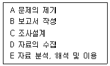
- A → E → C → D → B
- A → C → E → D → B
- A → E → D → C → B
- A → C → D → E → B
(정답률: 알수없음)
23. 서울시민들의 교통질서 수준을 알아보기 위하여 밤늦은 시간에 횡단보도를 건너는 행인이 없어도 얼마나 교통신호를 잘 지켜서 정지선에서는 지를 알아보는 조사를 하려고 한다. 이러한 연구를 하기 위하여 가장 적합하지 않은 방법은?
- 관찰법
- 실험실 실험법
- 면접법
- 설문조사법
(정답률: 알수없음)
24. 우편조사의 특성과 가장 거리가 먼 것은?
- 회수율이 낮은 경우 표본의 대표성을 확보하기 어렵다.
- 표본으로 추출된 대상자가 직접 응답했는지 확인하기 어렵다.
- 응답자에 대한 익명성과 비밀유지에 대한 확신을 부여하기 쉽다.
- 일반적으로 조사에 필요한 시간이 전화조사보다는 길지만 면접조사보다는 짧다.
(정답률: 알수없음)
25. 관찰을 통한 자료수집 시 지각과정에서 나타나는 오류를 감소하기 위한 방안으로 틀린 것은?
- 보다 큰 단위의 관찰을 한다.
- 객관적인 관찰도구를 사용한다.
- 관찰기간을 될 수 있는 한 길게 잡는다.
- 가능한 한 관찰단위를 명세화해야 한다.
(정답률: 알수없음)
26. TV 프로그램의 등장인물들을 중심으로 그들이 어떤 직업을 갖고 있는지에 대한 내용분석이 이루어졌을 때의 분석단위(unit of analysis)는?
- TV
- 프로그램
- 등장인물
- 직업
(정답률: 알수없음)
27. 선거기간 동안 매월 동일한 표본의 유권자들을 인터뷰하여 누구에게 투표할 의사가 있는지를 조사하는 것처럼, 동일한 사람들을 대상으로 여러 시점에 걸쳐 조사하는 연구방법은?
- 패널(panel)연구
- 횡단연구
- 코호트(cohort)연구
- 추세연구
(정답률: 알수없음)
28. 면접질문 시 면접자의 태도와 방식으로 적절하지 않은 것은?
- 모든 응답자에게 동일한 질문을 하는 것이 원칙이다.
- 질문에 자기의 의견을 어느 정도 드러내야 한다.
- 질문할 때는 가급적 마주보고 대화식으로 하는 것이 바람직하다.
- 질문은 질문지의 순서대로 해야 한다.
(정답률: 알수없음)
29. 다음은 질문지 작성의 일반적인 절차를 나열한 이다. ( ) 안에 들어갈 가장 알맞은 것은?
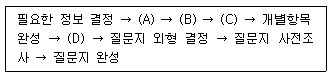
- A - 질문형태 결정, B - 질문순서 결정, C - 개별항목 내용결정, D - 자료수집방법 결정
- A - 자료수집방법 결정, B - 개별항목 내용결정, C - 질문형태 결정, D - 질문순서 결정
- A - 개별항목 내용결정, B - 질문형태 결정, C - 질문순서 결정, D - 자료수집방법 결정
- A - 자료수집방법 결정, B - 질문순서 결정, C - 개별항목 내용결정, D - 질문형태 결정
(정답률: 알수없음)
30. 관찰법(observation method)의 분류기준에 관한 설명으로 틀린 것은?
- 관찰이 일어나는 상황이 인공적인지 여부에 따라 자연적/인위적 관찰로 나누어진다.
- 피관찰자가 관찰사실을 알고 있는가 여부에 따라 공개적/비공개적 관찰로 나누어진다.
- 관찰시기가 행동발생과 일치하는가 여부에 따라 체계적/비체계적 관찰로 나누어진다.
- 관찰주체 또는 도구가 무엇인가에 따라 인간의 직접적/기계를 이용한 관찰로 나누어진다.
(정답률: 알수없음)
2과목: 고급조사방법론 II
31. 다음은 무엇에 대한 설명인가?
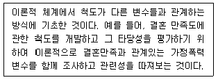
- 개념타당성(construct validity)
- 기준관련타당성(criterion-related validity)
- 표면타당성(face validity)
- 내용타당성(content validity)
(정답률: 알수없음)
32. 수집된 자료의 편집과정에서 주의해야 할 사항과 가장 거리가 먼 것은?
- 자료의 편집과정은 전체자료에 대하여 일관성을 유지하면서 수행되어야 한다.
- 완결되지 않은 응답은 응답자와 다시 접촉하여 완결하거나 결측값(missing value)으로 처리한다.
- 개방형 응답항목은 코딩과정에서 다양한 응답이 분류될 수 있도록 사전에 처리해야 한다.
- 코드북의 내용에는 문자로 입력된 변수들은 포함되어서는 안 된다.
(정답률: 알수없음)
33. 특정 정치인 3명에 대한 국민들의 태도를 전화조사(N=500)하려고 한다. 총 200,000명이 등재 된 전화번호부를 표집틀로 사용할 때, 다음 중 가장 적합하지 않은 방법은?
- 계통적 표집을 이용한다.
- 매 200페이지마다 한 명씩 뽑는다.
- 매 400페이지마다 한 명씩 뽑는다.
- 매 800페이지마다 한 명씩 뽑는다.
(정답률: 알수없음)
34. 다음 중 기준관련타당성(criterion-related validity)에 해당하지 않는 것은?
- 경험적 타당성
- 예측적 타당성
- 동시적 타당성
- 이론적 타당성
(정답률: 알수없음)
35. 측정이 반복됨으로써 얻어지는 학습효과로 인해 실험대상자의 반응에 영향을 미치는 것은?
- 우연적 사건(history)
- 성숙효과(maturation effect)
- 인과방향의 모호성(causal time-order)
- 시험효과(testing effect)
(정답률: 알수없음)
36. 다음 중 연구자가 설계한 측정도구 자체가 측정하고자 하는 속성이나 개념을 얼마나 대표할 수 있는지 평가하는 것은?
- 내용타당성(content validity)
- 이해타당성(nomological validity)
- 개념타당성(construct validity)
- 판별타당성(discriminant validity)
(정답률: 알수없음)
37. 의료직에 종사하는 남성근로자를 대상으로 하는 사회조사에서 변수가 될 수 없는 것은?
- 연령
- 성별
- 직업종류
- 근무시간
(정답률: 알수없음)
38. 다음 ( ) 안에 들어갈 가장 알맞은 것은?
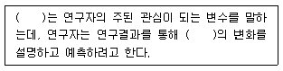
- 종속변수(dependent variable)
- 독립변수(independent variable)
- 조절변수(moderating variable)
- 매개변수(mediating variable)
(정답률: 알수없음)
39. 전문계 고등학교의 졸업생들을 중심으로 취업률을 조사하였을 때 그 척도에 대한 설명으로 옳은 것은?
- 수학적 계산이 불가능하다.
- 덧셈과 뺄셈만이 가능하다.
- 곱셈과 나눗셈만이 가능하다.
- 덧셈, 뺄셈, 곱셈, 나눗셈 모두 가능하다.
(정답률: 알수없음)
40. 동일한 상황에서 동일한 측정도구를 사용하여 동일한 대상을 일정한 간격을 두고 두 번 이상 측정하여 그 결과를 비교하여 신뢰성을 측정하는 방법은?
- 반분법(split-half method)
- 재검사법(test-test method)
- 복수양식법(parallel-forms technique)
- 내적일관성법(internal consistency method)
(정답률: 알수없음)
41. 전수조사(census)와 표본조사 사이의 관계에 대한 설명으로 틀린 것은?
- 전수조사가 가능해도 비용과 시간을 고려할 때 표본조사가 효율적인 경우가 많다.
- 표본조사는 전수조사의 질을 향상시키는데 사용 될 수 있다.
- 도서지방이나 산간지방에 대한 정보는 전수조사보다 표본조사를 통해 얻을 수 있다.
- 일정한 시점에서 신제품광고에 대한 인지도 조사는 표본조사로 신속하게 실시하는 것이 좋다.
(정답률: 알수없음)
42. 측정의 수준에 따라 4가지 종류의 척도로 구분 할 때, 가장 적은 정보를 갖는 척도로부터 가장 많은 정보를 갖는 척도를 그 순서대로 나열한 것은?
- 명목척도 < 비율척도 < 등간척도 < 서열척도
- 서열척도 < 명목척도 < 등간척도 < 비율척도
- 명목척도 < 서열척도 < 등간척도 < 비율척도
- 명목척도 < 서열척도 < 비율척도 < 등간척도
(정답률: 알수없음)
43. 데이터 처리 후 여러 가지 에러가 발생하는 경우 코딩에러를 찾아내서 수정하는 것은?
- 데이터 보완
- 데이터 리코딩
- 데이터 입력
- 데이터 클리닝
(정답률: 알수없음)
44. 표본조사보다는 전수조사가 바람직한 경우는?
- 모집단이 무한히 많은 경우
- 모집단의 정확한 파악이 불가능한 경우
- 각 조사대상에 대한 개별적인 정보가 필요한 경우
- 파괴적인 조사(destruction of objects)를 요구 하는 경우
(정답률: 알수없음)
45. 개인의 사회경제적 지위를 측정하기 위해 직업, 소득, 교육 등을 사용하여 각 측정치들의 상관계수를 통해서 타당성을 평가하는 것은?
- 내용타당성(content validity)
- 표면타당성(face validity)
- 개념타당성(construct validity)
- 기준관련타당성(criterion-related validity)
(정답률: 알수없음)
46. 개념적 정의와 조작적 정의에 관한 설명으로 틀린 것은?
- 개념적 정의는 추상적 수준의 정의이다.
- 조작적 정의는 측정을 위해서 불가피하다.
- 조작적 정의는 인위적이기 때문에 가능한 한 피해야 한다.
- 개념적 정의와 조작적 정의가 반드시 일치하는 것은 아니다.
(정답률: 알수없음)
47. 다음 중 일반적으로 코드북에 포함되는 항목과 가장 거리가 먼 것은?
- 변수명
- 변수값
- 모집단
- 자료파일 내의 변수위치
(정답률: 알수없음)
48. 총화평정척도에 대한 설명으로 틀린 것은?
- 리커트 척도라고도 한다.
- 평가자의 주관이 개입될 가능성이 크다.
- 전체 문항에 대한 응답의 총 평점이 태도의 측정치가 된다.
- 예비적 문항의 선정 단계를 거쳐서 최종의 척도를 구성하는 이중단계를 거친다.
(정답률: 알수없음)
49. 척도를 구성하는 과정에서 질문 문항들이 단일 차원을 이루는지를 검증할 수 있는 척도는?
- 서스톤척도
- 리커트척도
- 거트만척도
- 의미분화척도
(정답률: 알수없음)
50. 일반화가능성과 표본추출법 사이의 관계에 대한 설명으로 가장 적합하지 않은 것은?
- 일반화가능성이 중요하지 않은 조사라면 비확률 표집법을 사용할 수도 있다.
- 일반화가능성이 중요한 조사일수록 할당표집법 보다는 단순무작위표집법을 사용해야 한다.
- 일반화가능성이 중요한 조사일수록 층화표집보다는 군집표집법을 사용해야 한다.
- 일반화가능성이 중요한 조사일수록 임의표집보다는 계통추출법을 사용해야 한다.
(정답률: 알수없음)
51. 크론바하 알파값(cronbach's alpha)으로 계산하는 신뢰성 측정유형은?
- 반분법(split-half method)
- 재검사법(test-retest method)
- 복수양식법(parallel-forms technique)
- 내적일관성법(internal consistency method)
(정답률: 알수없음)
52. 다음 사례의 표본추출방법은?
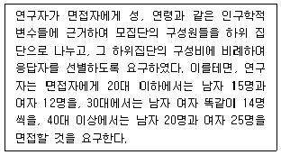
- 층화(stratification)표집
- 집락(cluster)표집
- 유의(purposive)표집
- 할당(quota)표집
(정답률: 알수없음)
53. 다음 중 척도와 지수에 관한 설명으로 틀린 것은?
- 척도와 지수는 변수에 대한 서열측정이다.
- 척도와 지수는 변수의 합성측정이다.
- 지수점수는 척도점수보다 더 많은 정보를 제공한다.
- 지수는 개별 속성들에 할당된 점수를 합산해서 구성한다.
(정답률: 알수없음)
54. 다음 중 층화표본추출(stratified sampling)방법을 사용하기에 가장 적합한 것은?
- 모집단에 대한 사전 지식이 없을 경우
- 모집단을 구성하는 하부 집단들의 대표성이 요구되지 않을 경우
- 동질적 집단 내에서 무작위 표본 추출을 하고자 할 경우
- 모집단을 구성하는 하부 집단들 간 이질성이 크지 않을 경우
(정답률: 알수없음)
55. 표집틀(sampling frame)을 평가하는 주요요소와 가장 거리가 먼 것은?
- 포괄성
- 안정성
- 효율성
- 추출확률
(정답률: 알수없음)
56. 명목척도 구성을 위한 측정범주들에 대한 기본원칙과 가장 거리가 먼 것은?
- 선택성
- 배타성
- 포괄성
- 연관성(논리적)
(정답률: 알수없음)
57. 거트만척도에서 응답자의 응답이 이상적인 패턴에 얼마나 가까운가를 측정하는 것은?
- 스캘로그램
- 재생가능계수
- 단일차원계수
- 최소오차계수
(정답률: 알수없음)
58. 표본의 크기를 결정하는데 고려해야 되는 요인과 가장 거리가 먼 것은?
- 신뢰도
- 표본추출방법
- 모집단의 동질성
- 수집된 자료가 분석되는 범주의 수
(정답률: 알수없음)
59. 일반적으로 표본설계과정을 바르게 나열한 것은?
- 모집단의 확정 → 표본프레임의 결정 → 표본추출방법의 결정 → 표본크기의 결정 → 표본추출
- 표본프레임의 결정 → 모집단의 확정 → 표본크기의 결정 → 표본추출방법의 결정 → 표본추출
- 표본프레임의 결정 → 모집단의 확정 → 표본추출방법의 결정 → 표본크기의 결정 → 표본추출
- 모집단의 확정 → 표본크기의 결정 → 표본추출방법의 결정 → 표본프레임의 결정 → 표본추출
(정답률: 알수없음)
60. A카드사에서 자사의 신용카드 사용자 중 최근 1년 동안 100만원 이상 구매자들을 모집단으로 하면서 자사카드 소지자 명단을 표본프레임으로사용하여 전체에서 차지하는 표본추출을 할 때의 표본프레임 오류는?
- 표본프레임이 모집단 내에 포함되는 경우
- 모집단이 표본프레임 내에 포함되는 경우
- 모집단과 표본프레임의 일부분만이 일치하는 경우
- 모집단과 표본프레임이 전혀 일치하지 않는 경우
(정답률: 알수없음)
3과목: 고급통계처리및분석
61. 이변량 정규분포를 따르는 변수 (X, Y)의 평균이 각각 1, 2이고 분산이 1, 1이며 상관계수가 0.5라고 하자. X의 값이 0인 경우 Y의 조건부분포는?
- 평균이 2.5, 분산이 0.75인 t분포
- 평균이 1.5, 분산이 0.75인 t분포
- 평균이 2.5, 분산이 0.75인 정규분포
- 평균이 1.5, 분산이 0.75인 정규분포
(정답률: 알수없음)
62. 다음은 어떤 대학의 신입생 중 13명을 랜덤하게 추출하여 대학수학능력시험 성적을 조사한 결과이다. 대학수학능력시험 평균이 257보다 큰가를 검정하기위해 비모수 검정법을 사용하기로 하였다. 부호순위 검정통계량 값은?
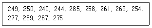
- 58
- 60
- 62
- 56
(정답률: 알수없음)
63. 두 가지 방법 A, B의 효과를 비교하기 위해 150명을 대상으로 조사하였다. 80명에게는 A방법을, 나머지 70명은 B방법을 적용하여 얼마의 시간이 흐른 후 A와 B방법 각각에 대하여 효과를 상, 중, 하로 나누어 표본을 조사하였다. 다음 중 가장 타당성 있는 검정방법은?
- 카이제곱 검정
- 쌍 비교 혹은 대응비교 검정
- 시계열 검정
- 두 효과 A, B의 모평균 차이에 대한 검정
(정답률: 알수없음)
64. 4개의 변수로 이루어진 다변량 자료의 상관계수의 행렬이 아래와 같다. 상관계수 행렬의 고유값(eigenvalue)이 2.00, 1.79, 0.19, 0.02일 때 몇 개의 인자(factor)를 사용하여 분석하는지에 대한 설명으로 옳은 것은?
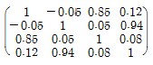
- 고유값이 2 이상인 것이 하나이므로 하나의 인자를 사용하는 것이 적절하다.
- 두 개의 고유값이 다른 것에 비해 매우 크므로 두 개의 인자를 사용하는 것이 적절하다.
- 첫 번째와 세 번째 변수 사이의 음의 상관관계가 있으므로, 두 변수 중 하나를 제외한 3개의 인자를 사용하는 것이 적절하다.
- 양의 고유값을 가지는 것이 4개이므로 4개의 인자를 사용하는 것이 적절하다.
(정답률: 알수없음)
65. 판별분석(discriminant analysis)에 대한 설명으로 틀린 것은?
- 독립변수와 종속변수의 구분이 필요하다.
- 공분산행렬의 동일성 검정에는 F-검정이 사용된다.
- 로짓(logit) 판별모형은 독립변수에 대한 정규성 가정이 불필요하다.
- 종속변수는 사전에 알려진 명목변수를 가정한다.
(정답률: 알수없음)
66. 10쌍의 부부의 키에 대하여 측정을 하였다. 신랑(X)과 신부(Y)의 상관계수 r은 0.519로 나왔다. 두 변수 간의 회귀분석을 실시하여 다음과 같은 결과를 산출하였다. 다음 ( )에 들어갈 가장 알맞은 값은? 복원중(문제 오류로 복원중입니다. 정확한 내용을 아시는 분께서는 오류신고를 통하여 내용 작성 부탁 드립니다. 정답은 1번입니다.)
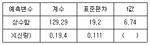
- 복원중(정확한 보기 내용을 아시는분께서는 오류 신고를 통하여 내용 작성부탁 드립니다.)
- 복원중(정확한 보기 내용을 아시는분께서는 오류 신고를 통하여 내용 작성부탁 드립니다.)
- 복원중(정확한 보기 내용을 아시는분께서는 오류 신고를 통하여 내용 작성부탁 드립니다.)
- 복원중(정확한 보기 내용을 아시는분께서는 오류 신고를 통하여 내용 작성부탁 드립니다.)
(정답률: 알수없음)
67. 다음 중 군집분석방법에 관한 설명으로 틀린 것은?
- 군집분석에서는 변수의 선택이 중요한 문제이므로 회귀분석에서처럼 의미가 없는 변수를 제거하는 것이 군집분석의 첫 단계이다.
- 군집분석에서는 최종결과에 대한 통계적 유의성을 검정할 수 없다.
- 군집분석방법은 다양한 특성을 지닌 관찰대상을 유사성을 바탕으로 동질적인 집단으로 분류하는 데 쓰이는 기법이다.
- 군집분석의 목적은 주어진 다수의 관측개체를 소수의 그룹으로 나눔으로써 대상집단을 이해하고 군집을 효율적으로 활용하고자 하는 것이다.
(정답률: 알수없음)
68. 다음 중 요인분석에 관한 설명으로 틀린 것은?
- 공통분산(communality)은 총 분산 중에서 요인이 설명하는 분산 비율을 의미한다.
- 요인추출모형 중에서 PCA(주성분분석)방식은 자료의 총분산을 분석하고, CFA(공통요인분석)방식은 자료의 공통분산만을 분석한다.
- 요인 부하량(factor loading)은 각 표본 대상자의 변수별 응답을 요인들의 선형결합으로 표현한 것이다.
- 요인분석은 정보의 손실을 최소화하면서 원래 변수들의 개수보다 적은 새로운 차원 또는 변량으로 요약하여 자료 변동을 설명하는 기법이다.
(정답률: 알수없음)
69. 여러 가지 다변량분석법에 대한 설명으로 틀린 것은?
- 요인분석과 군집분석은 독립변수와 종속변수의 구분이 필요 없다.
- 정준상관분석은 변수그룹 간의 상관구조를 분석하는 기법이다.
- 중회귀분석과 판별분석은 독립변수와 종속변수의 구분이 필요하다.
- 다변량분산분석(MANOVA)은 공변량이 존재하는 경우의 분산분석을 의미한다.
(정답률: 알수없음)
70. 다음 중에서 윌콕슨(Wilcoxon)에 의해 제안된 순위합검정(rank sum test)과 동일한 결과를 제공하는 비모수적 검정법은?
- sign 검정
- run의 검정
- Mann-Whitney 검정
- McNemar 검정
(정답률: 알수없음)
71. 30개의 관측자료를 갖고 종속변수 Y와 관련이 있다고 생각되는 2개의 독립변수 X1, X2를 활용 한 회귀분석을 하고자 한다. 우선 (X1, X2)가 모두 포함된 회귀분석을 실시한 결과 오차제곱합(SSE)은 230이고, X1만 포함된 회귀분석을 실시한 결과 오차제곱합(SSE)은 250이다. 이 경우 X2가 제거될 수 있는지 여부를 검정하기 위한 부분 F-검정(Partial F-test) 통계값은?
- 2.160
- 2.211
- 2.348
- 2.435
(정답률: 알수없음)
72. 다음 결과표는 요인분석에서 적당한 요인의 수를 결정하기 위하여 AIC(Akaike Information Criterion)를 이용한 경우이다. 자료 해석에 최적인 요인의 수는?
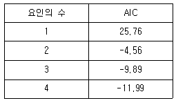
- 1개
- 2개
- 3개
- 4개
(정답률: 알수없음)
73. 다음 중 회귀분석에 관한 설명으로 틀린 것은?
- 관련된 변수들 중 한 변수를 나머지 변수들로부터 설명하기 위해 모형을 설정한다.
- 회귀라는 단어는 영국의 과학자 갈톤(S.F.Galton)이 사용한데서 유래한다.
- 절편(intercept)이 없는 단순선형회귀모형에서 잔차의 합은 항상 0이 된다.
- 단순선형회귀모형에서 결정계수는 항상 상관계수의 제곱과 같다.
(정답률: 알수없음)
74. 6개의 변수로 이루어진 다변량 자료에 대해 주성분방법을 이용하여 요인분석(factor analysis)을 하고자 한다. 자료의 표본상관계수 행렬의 고유치(eigenvalue)가 다음과 같다고 한다. 몇 개의 요인(factor)을 사용하는 것이 일반적으로 적절하겠는가?
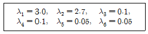
- 1
- 2
- 3
- 4
(정답률: 알수없음)
75. 어느 철강제조회사에서 제조 시 철의 강도에 영향을 미칠 것으로 생각되는 온도와 압력을 인자(factor)로 취하여 그들의 교호작용까지 분석하고자 할 때 가장 적합한 실험배치는?
- 일원배치법
- 반복이 다른 일원배치법
- 반복이 없는 이원배치법
- 반복이 있는 이원배치법
(정답률: 알수없음)
76. 동전을 독립적으로 n회 던져서 앞면이 나오는 횟수를 X라고 할 때, 앞면이 나오는 비율 p의 추정량
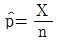
의 평균제곱(Mean Square Error: MSE)는?- np(1-p)
- p(1-p)
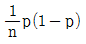
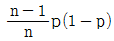
(정답률: 알수없음)
77. 서로 독립한 두 모집단의 평균의 차이를 검정할 때, 모집단에 대한 가정이 만족되지 않는다면 t-검정 대신에 비모수적 방법을 사용하는 것이 타당하다. 이 때, 사용되는 비모수적 검정법은?
- Friedman Test(프리드만 검정)
- Wilcoxon Sign Rank Test(윌콕슨의 부호순위검정)
- Wilcoxon Rank-sum Test(윌콕슨의 순위합검정)
- Kolmogorov-Smirnov Test(콜모고로프-스미르노프 검정)
(정답률: 알수없음)
78. 모분산(σ2)의 추정치를 각각
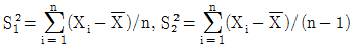
이라 할 때, 다음 설명 중 틀린 것은?- S12과 S22은 모두 일치추정량이다.
- S12은 편의추정량이고, S22은 불편추정량이다.
- 정규모집단 가정 하에서 S22은 최우추정량(MLE)이다.
- 정규모집단 가정 하에서 nS12/σ2은 X2(n-1)분포를 따른다.
(정답률: 알수없음)
79. 군집분석(cluster analysis)에서 비유사성(dissimilarity)에 대한 측도 중 변수들 간의 상관관계를 고려한 통계적 거리를 나타내는 측도는?
- 유클리디안(Euclidean) 거리
- 민코우스키(Minkowski) 거리
- 시티블록(City block) 거리
- 마할라노비스(Mahalanobis) 거리
(정답률: 알수없음)
80. 판별분석과 회귀분석에 관한 설명으로 틀린 것은?
- 회귀분석에서 종속변수는 정규분포에 따르는 확률변수이고 독립변수들의 수준은 주어진 상수라고 가정한다.
- 판별분석에서는 독립변수들은 다변량 정규분포를 따르고 종속변수들은 사전에 주어진 상수라고 가정한다.
- 회귀분석은 독립변수들의 정보를 이용하여 종속변수의 평균반응을 추정 혹은 예측한다.
- 판별분석은 소속 집단에 속하는 관측치들을 분류할 때 오분류 확률을 최소화할 수 있는 독립변수들의 선형함수 또는 이차함수를 찾는다.
(정답률: 알수없음)
81. 취업정보지에서 “은행 신입사원 중 석사학위소지자의 연봉은 학사학위 소지자의 연봉에 비해 300만원 이상 많다.”라고 주장하고 있다. 이 주장을 통계적으로 검정하기 위해 은행 신입사원 중 석사학위 소지자 10명과 학사학위 소지자 11명을 각각 랜덤하게 뽑아 조사하여 다음 결과를 얻었다. 두 모집단이 정규분포에 따르고 분산이 같다고 가정할 때, 이 주장을 검증하기 위한 t-검정 통계값은?
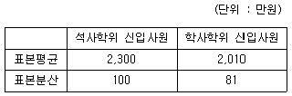
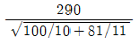
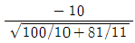
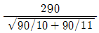
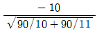
(정답률: 알수없음)
82. 군집분석(cluster analysis)에서 두 군집 간의 거리를 측정하는 방법이 아닌 것은?
- 평균연결법
- 완전연결법
- 왈드방법
- 분산연결법
(정답률: 알수없음)
83. 한 의상디자이너는 의류에 대해 45가지 항목에 대해 5점 만점 척도로 질문을 던졌다. 이 연구의 목적은 항목 간에 상관성이 높아 이를 몇 개의 잠재적 설명력이 높은 변수로 압축하여 설명하려는데 있다. 이에 적절한 분석 방법은?
- 요인분석
- 판별분석
- 군집분석
- 공분산분석
(정답률: 알수없음)
84. 정규분포를 따르는 모집단으로부터 얻은 표본의 크기 n인 자료를 이용하여 모평균 μ에 대한 가설 H0 : μ= μ0 대 H1 = μ > μ0을 검정하기 위한 검정통계량의 값이
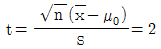
일 때, p- 값은? (단, 모집단의 분산은 알지 못하며, T는 자유도가 n-1인 t-분포를 따르는 확률변수를 나타낸다.)- P(ＩTＩ< 2)
- P(ＩTＩ > 2)
- P(T > 2)
- P(T < 2)
(정답률: 알수없음)
85. 다음 중 검정의 유의확률(p-값)에 대한 설명으로 틀린 것은?
- 여러 유의수준에 대하여 동일한 귀무가설이 기각되거나 또는 기각되지 않는 상반된 결과를 피할 수 있다.
- p-값이 작으면 작을수록 대립가설이 참이라는 증거가 강하다.
- p-값이 유의수준보다 큰 경우에 귀무가설을 기각할 근거가 희박하다.
- 귀무가설을 기각할 수 있는 최소의 제2종 오류이다.
(정답률: 알수없음)
86. 두 요인 A와 B가 각각 두 개의 수준 (A1, A2),(B1, B2)를 갖고 있고, 각 처리에 2개의 관찰단위가 임의로 배정되어서 다음과 같은 분산분석 결과가 나왔다. 다음 중 옳은 것은?
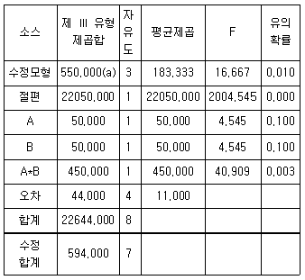
- 관찰변수의 표준편차의 추정치는 11이다.
- 유의수준 5%에서 B요인효과는 유의하지 않다.
- 유의수준 5%에서 교호작용 효과는 유의하지 않다.
- 전체 관찰 수는 9이다.
(정답률: 알수없음)
87. 다음은 어떤 자료에 대하여 중회귀분석(multiple regression)을 실시한 분산분석표이다. 이때 결정계수(coefficient of determination)를 구하면?
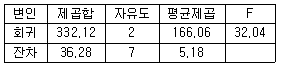
- 0.099
- 0.109
- 0.902
- 9.154
(정답률: 알수없음)
88. 단순회귀분석에서 잔차에 대한 설명으로 틀린 것은?
- 잔차들의 합은 0(zero)이다.
- 잔차(ei)와 독립변수 xi의 곱들의 합은 영이다.
- 잔차(ei)와 종속변수 yi의 곱들의 합은 영이다.
- 잔차(ei)와 종속변수
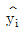
의 곱들의 합은 영이다.
(정답률: 알수없음)
89. 단순회귀모형에 관한 설명으로 틀린 것은?
- 최소자승법에 의해 구해진 회귀직선은 관측값과 추정값 간의 차의 제곱을 최소화 한다.
- 추정된 회귀직선은 좌표 (
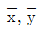
)를 지난다. - y = a + bx2와 같은 2차의 완벽한 관계가 있는 자료의 상관계수의 절대값은 1이 된다.
- 표본상관계수는 확률변수이다.
(정답률: 알수없음)
90. 요인분석(인자분석)에 있어 공통성(communality)에 대한 설명으로 옳은 것은?
- 변수들의 분산합은 공통성의 합과 같다.
- 공통성은 유일성(uniqueness)이라고도 한다.
- 변수의 분산 중 공통인자로 설명되는 부분을 의미한다.
- 공통성은 원 변수와 공통변수 간의 상관관계를 나타낸다.
(정답률: 알수없음)
91. X1,...Xn을 중앙값이 m인 분포에서의 확률표본이라고 할 때 H0 : m = m0를 검정하는 비모수검정법으로써 부호순위 검정법이 흔히 쓰인다. 다음 데이터에서 m0 = 63이라고 할 때, 부호순위 검정통계량의 값은?
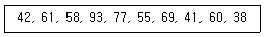
- 17
- 18
- 19
- 20
(정답률: 알수없음)
92. 독립변수가 4개인 중회귀모형을 적합시키기 위해 30개의 관측값을 분석하여 다음과 같은 결과를 얻었다. 결정계수(coefficient of determination)는 얼마인가?
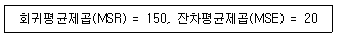
- 0.133
- 0.545
- 0.610
- 0.882
(정답률: 알수없음)
93. 귀무가설이 “모집단의 평균이 50 이하이다.”이고, 대립가설이 “모집단의 평균이 50보다 크다.”일 때, 크기가 25인 표본의 평균  를 검정하려고 한다. 다음 중 이 모집단의 분산이 25인 정규분포로 알려져 있을 때, 유의수준 5%에 해당하는 기각역에 가장 가까운 것은? (단 P(Z > 1.645)=0.95, Z는 표준정규확률변수이다.)
를 검정하려고 한다. 다음 중 이 모집단의 분산이 25인 정규분포로 알려져 있을 때, 유의수준 5%에 해당하는 기각역에 가장 가까운 것은? (단 P(Z > 1.645)=0.95, Z는 표준정규확률변수이다.)
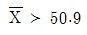
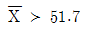
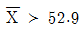
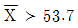
(정답률: 알수없음)
94. 다음 중 계층적 군집연산방식이 아닌 것은?
- 단일결합법(single linkage)
- 완전결합법(complete linkage)
- 순차적분계법(sequential threshold method)
- 평균결합법(average linkage)
(정답률: 알수없음)
95. 두 설명변수 x1, x2를 사용한 회귀 추정식이
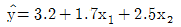
일 때의 설명으로 옳은 것은?- 회귀계수의 값 1.7의 의미는 설명변수 x1의 값을 1단위 증가할 때 반응변수 y의 값은 1.7단위 증가할 것임을 나타낸다.
- 회귀계수의 값 2.5의 의미는 설명변수 x1을 고정시킨 상태에서 x2의 값을 1단위 증가시키면 반응변수 y의 값은 2.5단위 증가할 것임을 나타낸다.
- 설명변수 x1만을 이용하여 회귀모형을 적합하였을 때 회귀추정식의 기울기는 1.7일 것이다.
- 설명변수 x2만을 이용하여 회귀모형을 적합하였을 때 회귀추정식은
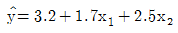
일 것이다.
(정답률: 알수없음)
96. 어떤 화학제품의 불순물에 대한 영향을 조사하기 위하여 원료의 모든 로트 B를 랜덤으로 2로 토 택하고, 첨가량 A를 A1, A2, A3의 3수준으로 변화시켜, 반복 2회의 3×3×3=18회의 실험 전체를 랜덤화하여 실험한 결과 다음의 분산분석 표를 얻었다. 다음 ( )에 들어갈 값은? (단, 로트는 랜덤요인임)
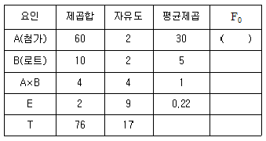
- 5
- 6
- 30
- 136.4
(정답률: 알수없음)
97. 세 개의 독립변수 X1, X2, X3와 종속변수 Y에 대한 15개의 데이터가 있다. 이 때, 회귀제곱합이 SSR=157.9, 잔차제곱합이 SSE=70.5라 가정하고 이 다중회귀모형의 유의성을 검정하기 위한 F-통계량의 값과 F-분포의 자유도를 바르게 나타낸 것은?
- F-통계량의 값 : 2.23, F-분포의 자유도 : (3, 12)
- F-통계량의 값 : 2.23, F-분포의 자유도 : (3, 11)
- F-통계량의 값 : 8.21, F-분포의 자유도 : (3, 11)
- F-통계량의 값 : 8.96, F-분포의 자유도 : (3, 12)
(정답률: 알수없음)
98. Runs 검정은 일반적으로 두 종류의 결과만을 갖는 경우에 독립성 여부를 알아보는 비모수적 검정방법이다. 어느 모집단으로부터 15명의 학생들을 표본추출하여 얻은 성별 자료가 주어진 표와 같다. 이 때 Runs 검정에 사용되는 통계량의 값은?
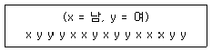
- 6
- 7
- 8
- 9
(정답률: 알수없음)
99. 갑이라는 타이어 제조업체에서는 2개의 생산라인 A, B에서 래디알 타이어를 생산하고 있다. 생산라인의 속도와 불량품 간에는 관계가 있는 것으로 나타났다. 불량품의 개수가 생산라인의 차이로부터 오는가를 알아보기 위해 각 라인으로부터 각각 12개의 타이어를 조사한 결과 다음과 같은 값들을 얻었다. 두 회귀직선의 동일성 여부를 검정하기 위한 검정 통계량 값은?
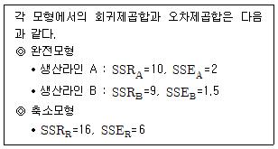
- 1.83
- 7.14
- 12.85
- 17.45
(정답률: 알수없음)
100. 정규분포를 따르는 집단의 모평균에 대하여 H0: μ=10, H1 : μ > 10을 세우고 표본 25개의 평균을 구한 결과
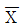
=8.04를 얻었다. 모집단의 표준편차를 5라고 할 때 다음 확률값은 이용하여 구한 유의확률(p-value)은? (단, Z는 표준화정규 확률변수를 나타낸다.)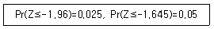
- 0.0125
- 0.025
- 0.⑤
- 0.975
(정답률: 알수없음)
횡단적 연구는 시간적 제약이 있어서 한 번에 여러 변수를 조사할 수 있으며, 비용이 적게 든다는 특징이 있다. 그러나 이러한 특성으로 인해 표본유지가 어렵다는 문제가 발생할 수 있다. 횡단적 연구에서는 한 번에 모든 변수를 조사하기 때문에, 표본을 유지하면서 연구를 진행하기 어렵다. 따라서, 횡단적 연구에서는 대부분의 경우 표본을 한 번 조사하고 버리는 것이 일반적이다.